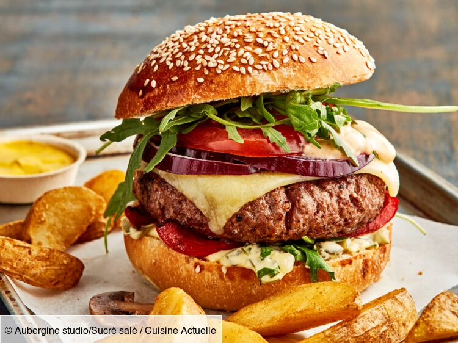

J'aime faire de temps en temps de la course à pied avec mon père et mon frère comme ici à la course de Dax 2019
J'aime le football, j'en ai fait pendant 10ans, les sports d'équipe c'est quelque chose qui me plait

Depuis que je suis au collège, l'informatique et tout le domaine du numérique et des nouvelles technologies m'interessent énormément
J'ai été un adolescent, fan de nouvelles technologies, j'adore donc aussi les jeux vidéos, toutes plateformes confondues, et je joue beaucoup avec des amis, où notre travail d'équipe est mis à l'épreuve

Je sais que les voyages sont quelque chose que tout le monde aime, je ne déroge pas à la règle, Etats-Unis, Guadeloupe, Canada, et des pays d'Europes, j'adore ça
On aime tous ça, manger ! Ce burger a l'air particulièrement bon

Grâce au confinement, j'ai découvert cet art incroyable que sont les animés et les mangas, et depuis j'adore toujours ça
Avant le COVID, j'aimais beaucoup sortir avec mes amis, et pouvoir organiser des choses à faire avec eux